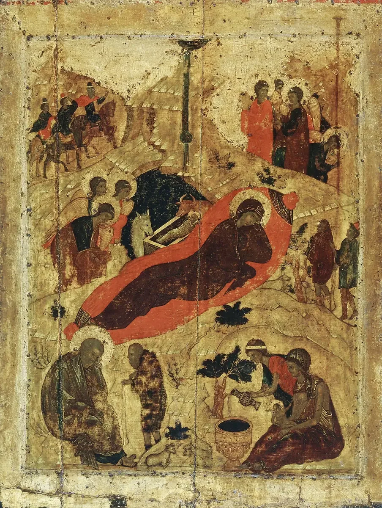
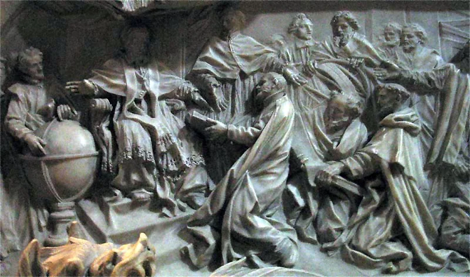
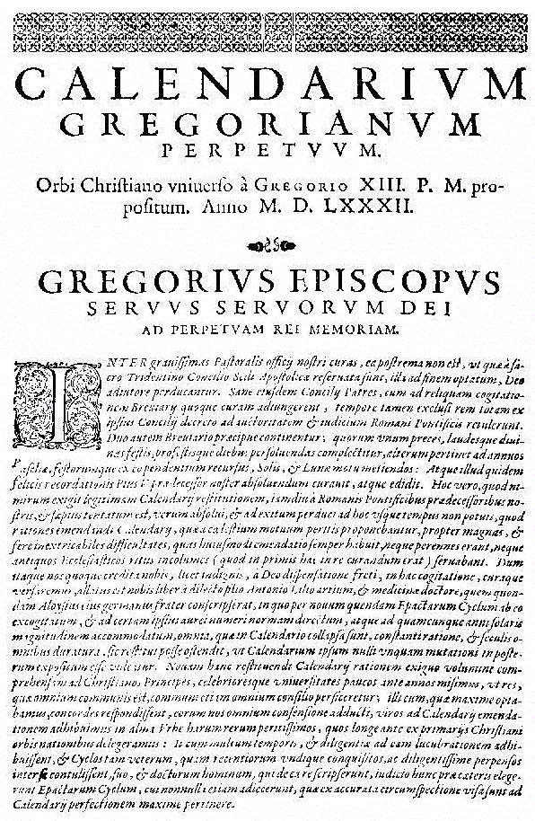
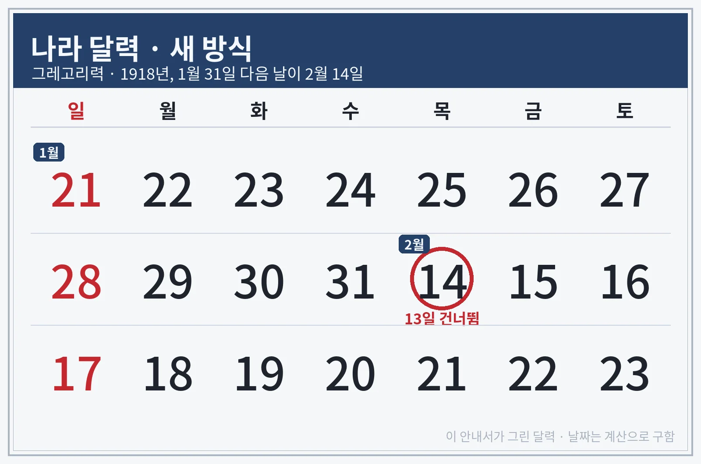

아직 펼치지 않은 카드1월 7일의 성탄과 이름의 날 · 11월 7일에 오는 성탄절러시아와 세르비아, 이집트의 많은 그리스도인은 1월 7일에 성탄을 지내요. 왜 12월 25일이 아닐까요?1월 7일에 성탄절을 지내는 나라들이 있대!
1918년 2월러시아 · 교회 달력과 나라 달력
1월 7일에 오는 성탄절
1918년 2월 러시아, 사람들이 아침에 눈을 뜨니 2월 1일이어야 할 날이 2월 14일이 되어 있었어요. 나라 달력만 바뀌고 교회 달력은 그대로 남았어요. 손잡이를 밀어, 같은 하루가 가진 두 이름을 겹쳐 보세요.
옛날 러시아에서는 자고 일어났더니 날짜가 13일이나 건너뛰어 있었대. 그런데 교회 달력은 그대로였어. 같은 날에 이름이 두 개! 같이 겹쳐 볼까?
검수 전 시안이에요(기준서 1판). 1582년의 칙서, 1918년의 법령, 1919년 티혼 총대주교의 편지처럼 그때의 기록을 따랐고, 진짜인지 논란이 있는 문서는 ‘기록마다 다른 점’에 적었어요. 달력 그림은 이 안내서가 날짜를 계산해 그렸어요. 상상은 ‘눈 감고 상상해 보기’에만 썼어요.
시안 확인용카드 단계 미리 보기
1
사라진 열흘, 지킨 달력
1582년 2월 24일, 로마의 교황 그레고리오 13세가 달력을 고치는 칙서를 냈어요. 칙서는 교황이 내리는 공식 문서예요.
그때까지 쓰던 달력은 율리우스력이에요. 이 달력은 한 해를 실제보다 11분쯤 길게 셌어요. 오랜 세월 그 차이가 쌓여, 봄의 기준이 되는 날(춘분)이 달력에서 열흘쯤 앞당겨져 있었어요.


그래서 칙서는 그해 10월에서 열흘을 뺐어요. 10월 4일 다음 날이 바로 10월 15일이 되었어요.
이듬해인 1583년, 콘스탄티노폴리스(지금의 이스탄불)의 총대주교 예레미아스 2세는 알렉산드리아 총대주교와 함께 새 달력을 받아들이지 않았어요. 그 뒤로도 편지와 공의회로 같은 뜻을 거듭 밝혔다고 해요.
그래서 동방의 정교회는 교회의 절기를 옛 율리우스력으로 이어 갔어요. 새 달력은 1700년, 1800년, 1900년을 윤년으로 치지 않아서, 두 달력의 차이는 그때마다 하루씩 벌어졌어요. 1900년부터는 13일이에요.
옛날 달력이 조금씩 틀려서, 한 번에 열흘을 건너뛰었대. 그런데 동쪽 교회들은 옛 달력을 그대로 쓰기로 했어.
물어보기자고 일어났더니 열흘이 지나 있으면 어떤 기분일까?
2
같은 하루, 두 이름
1918년 1월 말, 러시아 정부는 나라의 달력을 새 방식(그레고리력)으로 바꾸는 법령을 냈어요. 1월 31일 다음 날을 2월 1일이 아니라 2월 14일로 세라는 법령이었어요.
그래서 2월 1일이 될 아침, 사람들이 눈을 뜨니 2월 14일이었어요. 법령은 그해 7월 1일까지 새 날짜 뒤에 옛 날짜를 괄호로 함께 적게 했어요.
교회는 달랐어요. 법령이 알려진 바로 다음 날, 러시아 교회의 지역 공의회(교회 대표들의 회의)는 그해에는 옛 달력을 그대로 지키기로 정했어요. 아래 손잡이를 밀어 같은 날의 두 이름을 겹쳐 보세요.
가운데 손잡이를 밀어 교회 달력(옛 방식)과 나라 달력(새 방식)을 겹쳐 보세요. 같은 칸이 같은 하루예요.


왼쪽 · 교회 달력(옛 방식), 1918년 1~2월 · 이 안내서가 그린 달력 · 날짜는 계산으로 구함
오른쪽 · 나라 달력(새 방식), 1918년 1~2월 · 이 안내서가 그린 달력 · 날짜는 계산으로 구함
1월 31일 수요일까지는 두 달력이 같았어요. 다음 날 목요일, 나라 달력은 2월 14일로 건너뛰고 교회 달력은 2월 1일로 이어 갔어요.


왼쪽 · 교회 달력(옛 방식), 2026년 12월~2027년 1월 · 이 안내서가 그린 달력 · 날짜는 계산으로 구함
오른쪽 · 나라 달력(새 방식), 2026년 12월~2027년 1월 · 이 안내서가 그린 달력 · 날짜는 계산으로 구함
다가오는 성탄이에요. 교회 달력의 12월 25일 목요일이 나라 달력으로는 2027년 1월 7일 목요일이에요. 교회 달력의 새해 첫날은 나라 달력의 1월 14일이라, 조지아처럼 이날을 ‘옛 새해’로 한 번 더 맞는 곳도 있어요.


왼쪽 · 교회 달력(옛 방식), 2100년 12월 · 이 안내서가 그린 달력 · 날짜는 계산으로 구함
오른쪽 · 나라 달력(새 방식), 2100년 12월~2101년 1월 · 이 안내서가 그린 달력 · 날짜는 계산으로 구함
옛 달력에는 2100년 2월 29일이 있고, 새 달력에는 없어요. 그래서 그 뒤로는 차이가 14일이 되어, 교회 달력의 12월 25일이 나라 달력의 1월 8일이 돼요.
“1918년에는 옛 (율리우스) 달력에 그대로 머문다”
러시아 교회 지역 공의회의 결정(1918년 1월 30일) · 티혼 총대주교의 편지(1919년 1월 21일)에서 · 러시아어를 이 안내서가 우리말로 옮김
같은 편지에 따르면, 나라의 법도 정교회 신자가 많은 곳에서는 성탄과 부활절 같은 큰 축일을 옛 방식 날짜 그대로 쉬는 날로 두었어요.
그래서 그해 겨울부터, 교회 달력의 12월 25일은 나라 달력의 1월 7일이 되었어요. 지금도 러시아·세르비아·조지아 정교회와 이집트의 콥트 정교회, 에티오피아와 에리트레아의 정교회가 이렇게 1월 7일에 성탄을 지내요.
1월 7일, 성탄을 맞은 이웃에게 어떤 인사를 건넬까요?
1918년 러시아에서는 자고 일어났더니 날짜가 13일이나 훌쩍 넘어가 있었대. 그런데 교회 달력은 그대로였어. 그래서 같은 날을 두 이름으로 부르게 됐지.
물어보기손잡이를 밀어 봐. 교회 달력의 25일은 나라 달력으로 며칠이야?
눈 감고 상상해 보기
1918년 2월, 아직 어두운 겨울 아침이에요. 벽에 걸린 새 달력에는 14일이라고 적혀 있어요. 신문 머리에는 날짜가 둘, 새 날짜와 괄호 속 옛 날짜예요. 멀리 교회 종이 울리고, 교회 달력은 오늘을 2월 1일이라 불러요. 손가락으로 두 날짜를 번갈아 짚어 봐요. 어느 쪽이 오늘일까요? 둘 다 오늘이에요.
눈을 감아 봐. 추운 겨울 아침이야. 벽 달력은 14일, 교회 달력은 1일. 둘 다 오늘이래! 너는 어느 이름으로 불러 볼래?
나의 자리
같은 일을 서로 다른 날에 기념하는 사람들을 만난다면, 나는 무엇을 함께 나눌 수 있을까요?
우리 집에서 제일 기다리는 날은 언제야?
마음에 닿는 한 줄을 고르거나 직접 써 보세요. 한 줄을 남기면 이 자리의 도장이 찍혀요. 이 기기에만 저장돼요.
더 깊이
궁금한 칸만 펼쳐 읽어도 괜찮아요.
알고 보면
율리우스력과 그레고리력 율리우스력은 기원전 46년 율리우스 카이사르가 들인 달력이에요. 그레고리력은 1582년 그레고리오 13세가 고친 달력으로, 지금 우리가 쓰는 양력이에요.
윤년 규칙 하나 차이 두 달력 모두 4년마다 윤년을 둬요. 다만 그레고리력은 1700·1800·1900년처럼 400으로 나누어떨어지지 않는 100년째 해를 윤년으로 치지 않아요. 그래서 2000년에는 차이가 그대로였고, 2100년에 다시 하루 벌어져요.
1월 7일에 성탄을 지내는 사람들 알자지라는 2026년, 이렇게 1월 7일에 성탄을 지내는 그리스도인을 2억 5천만에서 3억 명으로 어림했어요.
12월 25일로 옮긴 교회들
1923년 5월, 콘스탄티노폴리스에서 정교회들의 회의가 열려 율리우스력을 고치기로 했어요. 세르비아에서 온 과학자 밀루틴 밀란코비치가 낸 윤년 규칙이 받아들여졌어요. 이 ‘고친 율리우스력’은 2800년까지 그레고리력과 날짜가 같아요.
그리스와 루마니아 교회는 1차 세계대전 뒤에, 불가리아 교회는 1968년에 성탄을 12월 25일로 옮겼어요. 우크라이나는 2023년에 나라의 공휴일 성탄을 12월 25일로 바꿨지만, 1월 7일을 지키는 사람도 있어요.
그래서 오늘 정교회 안에서도 성탄 날짜가 둘이에요. 위 사진의 아테네 대성당에서는 12월 25일에, 모스크바와 트빌리시의 성당에서는 1월 7일에 성탄 예배를 드려요.
기록마다 다른 점
1583년의 ‘시길리온’ 새 달력을 단죄했다는 ‘1583년 시길리온(봉인 문서)’이 널리 알려져 있어요. 그런데 2011년의 한 연구는 이 문서를 1858년 아토스산의 한 수도사가 여러 문서를 엮어 만든 것으로 봤어요. 같은 연구도 총대주교가 1583년, 1587년, 1593년에 편지와 공의회로 새 달력을 거절했다는 점은 인정해요. 다만 그 공의회들의 결정문은 남아 있지 않아요.
러시아 교회와 고친 달력 밀란코비치는 1924년 글에서 러시아 교회가 이미 고친 달력을 따랐다고 적었어요. 그러나 러시아 교회는 오늘까지 옛 달력으로 절기를 지켜요.
‘1월 7일’이라는 이름 1918년 전 러시아에서는 나라 달력도 옛 방식이었어요. 그래서 그때 러시아의 성탄은 나라 달력으로도 ‘12월 25일’이었어요. ‘1월 7일의 성탄’은 나라 달력이 바뀐 뒤에 생긴 이름인 셈이에요.
같은 이야기를 읽는 날
날짜는 달라도, 성탄에 기억하는 이야기는 같아요. 말씀은 뜻만 옮기고, 본문은 대한성서공회 개역개정으로 이어 드려요.
누가복음 2장 1~7절 요셉과 마리아가 호적 등록을 하러 베들레헴에 갔다가, 머물 곳이 없어 아기를 구유에 누인 이야기예요.
마태복음 2장 1~11절 동방에서 온 박사들이 별을 따라와 아기에게 경배한 이야기예요.
세 쌍의 달력 끝까지 금박
1918년, 다가오는 성탄, 2100년의 성탄. 세 쌍의 달력을 모두 손잡이로 양쪽 끝까지 밀면 금박이 입혀져요.
세 쌍의 달력을 양쪽 끝까지 밀어 보기
1월 7일의 인사 채색
둘 가운데 하나만 해도 카드가 채색돼요.
1월 7일, 이웃에게 건넬 성탄 인사 고르기
아이와 함께 ‘영화처럼 보기’를 끝까지 보기
근거 보기 (14)
- 「인테르 그라비시마스」(1582) 영어 번역, 위키문헌 — 춘분이 열흘쯤 앞당겨진 까닭, 10월 5~14일을 뺌, 100년째 해의 윤년 규칙, 2월 24일
- 성 베드로 대성전 안내(stpetersbasilica.info): 그레고리오 13세 기념비 — 카밀로 루스코니, 새 달력 반포를 새긴 부조
- 오레이의 키프리아노스 주교, 「1583년 시길리온: 신화인가 사실인가」(2011) — 1583·1587·1593년의 거절, 시길리온은 1858년에 엮은 문서
- 소비에트 인민위원회, 새 달력 도입 법령(1918년 2월 6일) 영어 번역 — 1월 31일 다음 날은 2월 14일, 7월 1일까지 옛 날짜를 괄호로 함께
- 루이스 시겔바움, 「새 달력과 글자 개혁」(Seventeen Moments in Soviet History) — 2월 1일 아침 눈을 뜨니 2월 14일, 13일 차이
- 티혼 총대주교가 콘스탄티노폴리스 총대주교에게 보낸 편지(1919년 1월 21일, azbyka.ru) — 1918년 1월 30일 공의회 결정, 성탄 등 큰 축일은 옛 방식으로
- 알자지라(2026.1.7): 왜 2억 5천만 그리스도인이 1월 7일에 성탄을 지낼까 — 1월 7일에 지내는 교회들, 13일 차이, 2101년 1월 8일, 그리스·루마니아·불가리아·우크라이나
- 밀루틴 밀란코비치, 「동방 교회의 새 달력」(Popular Astronomy 1924, 옮겨 실은 글) — 1923년 5월 콘스탄티노폴리스 회의, 그가 낸 윤년 규칙
- 「옛 방식과 새 방식」(azbyka.ru) — 두 달력의 차이가 1900년 3월부터 2100년 2월까지 13일
- OrthoChristian(조지아 투데이 2015 옮겨 실음): 조지아의 성탄 — 1월 7일 성탄, 1월 14일 옛 새해
- 노보스티(세르비아): “미르 보지, 흐리스토스 세 로디 — 바이스티누 세 로디” 성탄 인사
- 링(Ling) 조지아어 성탄 인사 — “길로차브 크리스테쇼바스”, ‘쇼바’는 태어남
- RFE/RL: 조지아의 성탄 — ‘쇼바’는 ‘태어남’이라는 뜻
- 비크나 TV: 성탄 인사 “흐리스토스 라질샤 — 슬라빔 예보”
그림·사진·소리 출처
- 카밀로 루스코니 조각(1715~1723) · 사진: Rsuessbr · CC BY-SA 3.0 · 위키미디어 공용
- 1582년 인쇄본 · 퍼블릭 도메인 · 위키미디어 공용
- 사진: George E. Koronaios · CC BY-SA 4.0 · 위키미디어 공용
- 이 안내서가 그린 달력 · 날짜는 계산으로 구함
- 이 안내서가 그린 달력 · 날짜는 계산으로 구함
- 이 안내서가 그린 달력 · 날짜는 계산으로 구함
- 이 안내서가 그린 달력 · 날짜는 계산으로 구함
- 이 안내서가 그린 달력 · 날짜는 계산으로 구함
- 이 안내서가 그린 달력 · 날짜는 계산으로 구함
- 그림: 안드레이 루블료프(로 전함) 「성탄」 이콘, 모스크바 크렘린 성모 영보 대성당 · 퍼블릭 도메인 · 위키미디어 공용
‘처음 만나는 기독교 문화’의 깊은 카드예요. 실제 인물의 사진은 쓰지 않았어요. 카드 단계와 남긴 글은 이 기기에만 저장돼요.